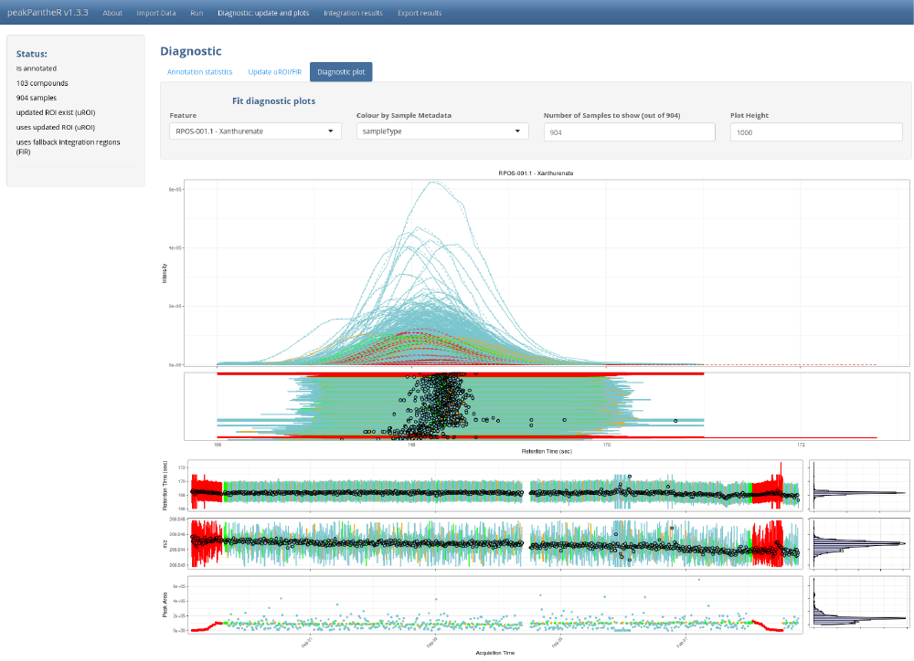

vignettes/getting-started.Rmd
getting-started.RmdPackage: peakPantheR
Authors: Arnaud Wolfer
Package for Peak Picking and ANnoTation of High resolution Experiments in R, implemented in R and Shiny
peakPantheR implements functions to detect, integrate and report pre-defined features in MS files (e.g. compounds, fragments, adducts, …).
It is designed for:
multiple compounds in one file at a timemultiple compounds in multiple files in parallel, store results in a single objectpeakPantheR can process LC/MS data files in NetCDF, mzML/mzXML and mzData format as data import is achieved using Bioconductor’s mzR package.
To install peakPantheR from Bioconductor:
if (!requireNamespace("BiocManager", quietly = TRUE))
install.packages("BiocManager")
BiocManager::install("peakPantheR")Install the development version of peakPantheR directly from GitHub with:
# Install devtools
if(!require("devtools")) install.packages("devtools")
devtools::install_github("phenomecentre/peakPantheR")To get started peakPantheR’s graphical user interface implements all the functions to detect and integrate multiple compounds in multiple files in parallel and store results in a single object. It can be employed to integrate a large number of expected features across a dataset:
library(peakPantheR)
peakPantheR_start_GUI(browser = TRUE)
# To exit press ESC in the command line
The GUI is to be preferred to understand the methodology, select the best parameters on a subset of the samples before running the command line, or to visually explore results.
If a very high number of samples and features is to be processed, peakpantheR’s command line functions are more efficient, as they can be integrated in scripts and the reporting automated.
Both real time and parallel compound integration require a common set of information:
netCDF / mzML MS file(s)RT / m/z window) for each compound.For demonstration purpose we can annotate a set a set of raw MS spectra (in NetCDF format) provided by the faahKO package. Briefly, this subset of the data from (Saghatelian et al. 2004) invesigate the metabolic consequences of knocking out the fatty acid amide hydrolase (FAAH) gene in mice. The dataset consists of samples from the spinal cords of 6 knock-out and 6 wild-type mice. Each file contains data in centroid mode acquired in positive ion mode form 200-600 m/z and 2500-4500 seconds.
Below we install the faahKO package and locate raw CDF files of interest:
if (!requireNamespace("BiocManager", quietly = TRUE))
install.packages("BiocManager")
BiocManager::install("faahKO")
library(faahKO)
## file paths
input_spectraPaths <- c(system.file('cdf/KO/ko15.CDF', package = "faahKO"),
system.file('cdf/KO/ko16.CDF', package = "faahKO"),
system.file('cdf/KO/ko18.CDF', package = "faahKO"))
input_spectraPaths
#> [1] "C:/R/R-4.1.0/library/faahKO/cdf/KO/ko15.CDF"
#> [2] "C:/R/R-4.1.0/library/faahKO/cdf/KO/ko16.CDF"
#> [3] "C:/R/R-4.1.0/library/faahKO/cdf/KO/ko18.CDF"Expected regions of interest (targeted features) are specified using the following information:
cpdID (numeric)cpdName (character)rtMin (sec)rtMax (sec)rt (sec, optional / NA)mzMin (m/z)mzMax (m/z)mz (m/z, optional / NA)Below we define 2 features of interest that are present in the faahKO dataset and can be employed in subsequent vignettes:
# targetFeatTable
input_targetFeatTable <- data.frame(matrix(vector(), 2, 8, dimnames=list(c(),
c("cpdID", "cpdName", "rtMin", "rt", "rtMax", "mzMin",
"mz", "mzMax"))), stringsAsFactors=FALSE)
input_targetFeatTable[1,] <- c(1, "Cpd 1", 3310., 3344.888, 3390., 522.194778,
522.2, 522.205222)
input_targetFeatTable[2,] <- c(2, "Cpd 2", 3280., 3385.577, 3440., 496.195038,
496.2, 496.204962)
input_targetFeatTable[,c(1,3:8)] <- sapply(input_targetFeatTable[,c(1,3:8)],
as.numeric)| cpdID | cpdName | rtMin | rt | rtMax | mzMin | mz | mzMax |
|---|---|---|---|---|---|---|---|
| 1 | Cpd 1 | 3310 | 3344.888 | 3390 | 522.194778 | 522.2 | 522.205222 |
| 2 | Cpd 2 | 3280 | 3385.577 | 3440 | 496.195038 | 496.2 | 496.204962 |
While the command line functions accept Data.Frame and vectors as input, the graphical user interface (GUI) will read the same information from a set of .csv files, or an already set-up peakPantheRAnnotation object in .RData format.
We can now generate GUI input files for the faahKO example dataset presented previously:
A peakPantheRAnnotation (previously annotated or not) can be passed as input in a .RData file. The peakPantheRAnnotation object must be named annotationObject:
library(faahKO)
# Define the file paths (3 samples)
input_spectraPaths <- c(system.file('cdf/KO/ko15.CDF', package = "faahKO"),
system.file('cdf/KO/ko16.CDF', package = "faahKO"),
system.file('cdf/KO/ko18.CDF', package = "faahKO"))
# Define the targeted features (2 features)
input_targetFeatTable <- data.frame(matrix(vector(), 2, 8, dimnames=list(c(),
c("cpdID", "cpdName", "rtMin", "rt", "rtMax", "mzMin",
"mz", "mzMax"))), stringsAsFactors=FALSE)
input_targetFeatTable[1,] <- c("ID-1", "Cpd 1", 3310., 3344.888, 3390.,
522.194778, 522.2, 522.205222)
input_targetFeatTable[2,] <- c("ID-1", "Cpd 2", 3280., 3385.577, 3440.,
496.195038, 496.2, 496.204962)
input_targetFeatTable[,3:8] <- sapply(input_targetFeatTable[,3:8], as.numeric)
# Define some random compound and spectra metadata
# cpdMetadata
input_cpdMetadata <- data.frame(matrix(data=c('a','b',1,2), nrow=2, ncol=2,
dimnames=list(c(), c('testcol1','testcol2')),
byrow=FALSE), stringsAsFactors=FALSE)
# spectraMetadata
input_spectraMetadata <- data.frame(matrix(data=c('c','d','e',3,4,5), nrow=3,
ncol=2,
dimnames=list(c(),c('testcol1','testcol2')),
byrow=FALSE), stringsAsFactors=FALSE)
# Initialise a simple peakPantheRAnnotation object
# [3 files, 2 features, no uROI, no FIR]
initAnnotation <- peakPantheRAnnotation(spectraPaths=input_spectraPaths,
targetFeatTable=input_targetFeatTable,
cpdMetadata=input_cpdMetadata,
spectraMetadata=input_spectraMetadata)
# Rename and save the annotation to disk
annotationObject <- initAnnotation
save(annotationObject,
file = './example_annotation_ppR_UI.RData',
compress=TRUE)Another input option for the GUI input consists of a set of .csv files.
Targeted features are defined in a .csv with as rows each feature to target (the first row must be the column name), and as columns the fit parameters to use. At minimum the following parameters must be defined:
cpdID, cpdName, rtMin, rt, rtMax, mzMin, mz, mzMax
If uROI and FIR are to be set, the following columns must be provided:
cpdID, cpdName, ROI_rt, ROI_mz, ROI_rtMin, ROI_rtMax, ROI_mzMin, ROI_mzMax, uROI_rtMin, uROI_rtMax, uROI_mzMin, uROI_mzMax, uROI_rt, uROI_mz, FIR_rtMin, FIR_rtMax, FIR_mzMin, FIR_mzMax
# Define targeted features without uROI and FIR (2 features)
input_targetFeatTable <- data.frame(matrix(vector(), 2, 8, dimnames=list(c(),
c("cpdID", "cpdName", "rtMin", "rt", "rtMax", "mzMin",
"mz", "mzMax"))), stringsAsFactors=FALSE)
input_targetFeatTable[1,] <- c("ID-1", "Cpd 1", 3310., 3344.888, 3390.,
522.194778, 522.2, 522.205222)
input_targetFeatTable[2,] <- c("ID-1", "Cpd 2", 3280., 3385.577, 3440.,
496.195038, 496.2, 496.204962)
input_targetFeatTable[,3:8] <- sapply(input_targetFeatTable[,3:8], as.numeric)
# save to disk
write.csv(input_targetFeatTable,
file = './1-fitParams_example_UI.csv',
row.names = FALSE)| cpdID | cpdName | rtMin | rt | rtMax | mzMin | mz | mzMax |
|---|---|---|---|---|---|---|---|
| ID-1 | Cpd 1 | 3310 | 3344.888 | 3390 | 522.194778 | 522.2 | 522.205222 |
| ID-1 | Cpd 2 | 3280 | 3385.577 | 3440 | 496.195038 | 496.2 | 496.204962 |
It is possible to select the files on disk directly through the GUI, or to select a .csv file containing each file path as well as spectra metadata. Each row correspond to a different spectra (the first row must define the column names) while columns correspond to the path on disk and metadata. At minimum a column filepath must be present, with subsequent columns defining metadata properties.
# Define the spectra paths and metada
input_spectraMeta <- data.frame(matrix(vector(), 3, 3,
dimnames=list(c(),c("filepath","testcol1","testcol2"))),
stringsAsFactors=FALSE)
input_spectraMeta[1,] <- c(system.file('cdf/KO/ko15.CDF', package = "faahKO"),
"c", 3)
input_spectraMeta[2,] <- c(system.file('cdf/KO/ko16.CDF', package = "faahKO"),
"d", 4)
input_spectraMeta[3,] <- c(system.file('cdf/KO/ko18.CDF', package = "faahKO"),
"e", 5)
# save to disk
write.csv(input_spectraMeta,
file = './2-spectraMetaWPath_example_UI.csv',
row.names = FALSE)| filepath | testcol1 | testcol2 |
|---|---|---|
| C:/R/R-4.1.0/library/faahKO/cdf/KO/ko15.CDF | c | 3 |
| C:/R/R-4.1.0/library/faahKO/cdf/KO/ko16.CDF | d | 4 |
| C:/R/R-4.1.0/library/faahKO/cdf/KO/ko18.CDF | e | 5 |
It is possible to define some feature metadata, with targeted features as rows (same order as the fitting parameters, first row defining the column names), and as columns the metadata.
# Define the feature metada
input_featMeta <- data.frame(matrix(vector(), 2, 2,
dimnames=list(c(),c("testcol1","testcol2"))),
stringsAsFactors=FALSE)
input_featMeta[1,] <- c("a", 1)
input_featMeta[2,] <- c("b", 2)
# save to disk
write.csv(input_featMeta,
file = './3-featMeta_example_UI.csv',
row.names = FALSE)| testcol1 | testcol2 |
|---|---|
| a | 1 |
| b | 2 |